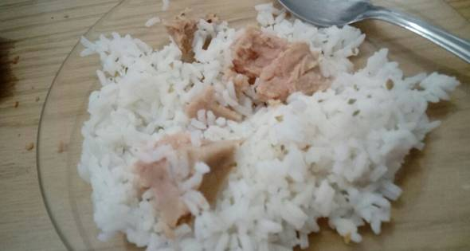

Arroz con atun

Yeah i know you want rice with tuna so stay tuned haha!
Rice with tuna this baby it's easy-make, if you think that your dumbass could never cook something you are definitly wrong. And the best TASTE LIKE GOD
Ingredients
- Rice
- Tuna
- Salt
- Optional
- Onion
- Chickpeas
- Mayonnaise
Steps
- Boil water NOW.
- When water is boiling, add rice. How many? It's your business.
- When rice is ready maybe in five or six minutes, dry the water and open a can of tuna.
- Mix the tuna with the rice and add salt as you please.
- LET'S FUCKING GO.